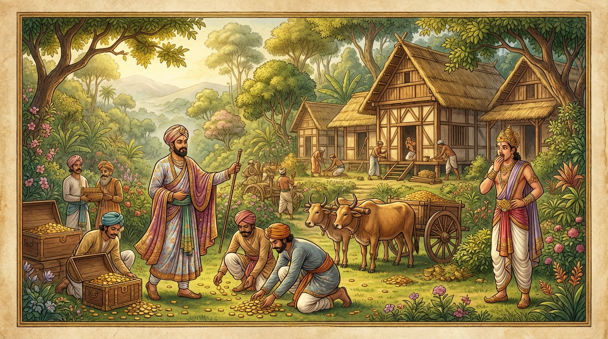

අනාථපිණ්ඩික සිටුතුමා සහ ජේතවනාරාම පූජාව
මෙසේ භාග්යවතුන් වහන්සේ පියාණන් වහන්සේව (මාර්ග) ඵල තුනෙහි පිහිටුවා භික්ෂු සංඝයා පිරිවරා නැවතත් රජගහ නුවරට ගොස් වේළුවනයෙහි වැඩ විසූහ. එම කාලයෙහි අනාථපිණ්ඩික ගෘහපති තෙම කරත්ත පන්සියයකින් බඩු රැගෙන රජගහ නුවර සිටින තම මිත්ර සිටුවරයාගේ නිවසට ගොස්, එහිදී ‘බුදුරජාණන් වහන්සේ ලොව පහළ වී ඇතැ’ යි අසා, ඉතා අලුයම් වේලෙහි දෙවියන්ගේ ආනුභාවයෙන් විවෘත වූ දොරින් ශාස්තෘන් වහන්සේ වෙත එළැඹ, දහම් අසා සෝවාන් ඵලයෙහි පිහිටියේය. දෙවැනි දිනයෙහි බුදුරජුන් ප්රමුඛ මහා භික්ෂු සංඝයාට මහා දානයක් දී, සැවැත් නුවරට වැඩමවීම සඳහා ශාස්තෘන් වහන්සේගේ පොරොන්දුව ගත්තේය. අතරමග යොදුන් හතළිස් පහක් වූ තැන්වල ලක්ෂය බැගින් වියදම් කොට යොදුනෙන් යොදුන විහාර කරවා, ජේතවන උයන රන් කහවණු අතුරා දහඅට කෝටියකට මිලදී ගෙන විහාර කර්මාන්තය ඇරඹීය. හෙතෙම එහි මැද දසබලයන් වහන්සේට ගන්ධ කුටියක් කරවීය. එය පිරිවරා අසූ මහා තෙරවරුන්ට වෙන වෙනම නිවාස, ආවාස, එක් කූටාගාර, ද්වි කූටාගාර, හංස වට්ටක (හස් වළලු හැඩැති ගෙවල්), දිගු ශාලා, මණ්ඩප ආදී වශයෙන් සෙසු සෙනසුන් ද, පොකුණු, සක්මන් මළු, රාත්රී ස්ථාන හා දිවා ස්ථාන ද යනාදී වශයෙන් දහඅට කෝටියක ධනයක් වියදම් කොට රමණීය භූමි භාගයක මනරම් විහාරයක් කරවා, දසබලයන් වහන්සේට වැඩමවීම පිණිස දූතයෙකු යැවීය. ශාස්තෘන් වහන්සේ දූතයාගේ වචනය අසා මහා භික්ෂු සංඝයා පිරිවරා රජගහ නුවරින් නික්ම පිළිවෙළින් සැවැත් නුවරට පැමිණි සේක.

මහා සිටුවරයා ද විහාර පූජා උත්සවය සූදානම් කොට, තථාගතයන් වහන්සේ ජේතවනයට පිවිසෙන දිනයෙහි තම පුත්රයා සියලු ආභරණයෙන් සරසා, අලංකාර ලෙස සැරසුණු පන්සියයක් කුමාරවරුන් සමඟ (පෙරගමන්) යැවීය. ඔහු පිරිවර සහිතව පස් පැහැති වස්ත්රවලින් බබළන කොඩි පන්සියයක් රැගෙන දසබලයන් වහන්සේ ඉදිරියෙහි ගමන් ගත්තේය. ඔවුන්ට පිටුපසින් මහා සුභද්රා සහ චූළ සුභද්රා යන සිටු දියණියන් දෙදෙනා පන්සියයක් කුමාරිකාවන් සමඟ පිරුණු කළ (පූර්ණ ඝට) රැගෙන නික්මුණාහ. ඔවුන්ට පිටුපසින් සිටු බිරිඳ සියලු ආභරණයෙන් සැරසී පන්සියයක් කාන්තාවන් සමඟ පිරුණු තැටි රැගෙන නික්මුණාය. සියල්ලන්ටම පිටුපසින් මහා සිටුවරයාම අලුත් වස්ත්ර හැඳ, අලුත් වස්ත්ර හැඳි පන්සියයක් සිටුවරුන් සමඟ භාග්යවතුන් වහන්සේට පෙරගමන් ගියේය. භාග්යවතුන් වහන්සේ මේ උපාසක පිරිස ඉදිරියෙන් යවා, මහා භික්ෂු සංඝයා පිරිවරාගෙන, තම ශරීර ප්රභාවෙන් අවට වනාන්තර රන් දියර ඉසින ලද්දක් මෙන් කරමින්, අනන්ත වූ බුද්ධ ලීලාවෙන් හා අසමසම වූ බුද්ධ ශ්රීයෙන් ජේතවන විහාරයට පිවිසි සේක.
ඉක්බිති අනාථපිණ්ඩික තෙම, “ස්වාමීනි, මම මේ විහාරය සම්බන්ධයෙන් කෙසේ පිළිපදින්න ද?” යි ඇසීය. “එසේ නම් ගෘහපතිය, මේ විහාරය පැමිණියා වූ ද නොපැමිණියා වූ ද සිව් දෙසින් වඩින භික්ෂු සංඝයාට පූජා කරන්න” යි (බුදුරජුන් වදාළහ). “එසේය, ස්වාමීනි” යි මහා සිටුතුමා රන් කෙණ්ඩිය ගෙන දසබලයන් වහන්සේගේ අතෙහි පැන් වත් කොට, “මේ ජේතවන විහාරය පැමිණියා වූ ද නොපැමිණියා වූ ද සිව් දෙසින් වඩින භික්ෂු සංඝයාට පූජා කරමි” යි පූජා කළේය. ශාස්තෘන් වහන්සේ විහාරය පිළිගෙන අනුමෝදනා කරන්නාහු (මෙසේ වදාළහ).
“විහාරය (කුටිය) සීතල ද, උෂ්ණය ද වළකාලයි. එසේම රුදුරු මෘගයන්ගෙන් ද, සර්පයන්ගෙන් ද, මැසි මදුරුවන්ගෙන් ද, සිසිර ඍතුවේ වැස්සෙන් ද වන පීඩා දුරු කරයි.”
“තවද තද සුළං සහ අව්ව ඇති වූ කල ඒවා වළකාලයි. වාසය කිරීම පිණිස ද, සුව පහසුව පිණිස ද, ධ්යාන වැඩීම පිණිස ද, විදසුන් වැඩීම පිණිස ද (විහාරය උපකාරී වේ).”
“සංඝයාට විහාර දන්දීම අග්ර යැයි බුදුරජාණන් වහන්සේ වර්ණනා කළහ. එබැවින් නුවණැති මිනිසා තමාගේ යහපත දකින්නේ,”
“රමණීය විහාර කරවන්නේය. එහි බහුශ්රැත භික්ෂූන් වස්සවන්නේය. උන්වහන්සේලාට ආහාරපාන ද, වස්ත්ර ද, සෙනසුන් ද පූජා කළ යුතුය.”
“සෘජු සිත් ඇත්තවුන්ට (මහා සංඝයාට) පැහැදුණු සිතින් යුතුව දන් දිය යුතුය. උන්වහන්සේලා සියලු දුක් දුරු කරන ධර්මය ඔහුට දේශනා කරති. යම් ධර්මයක් දැනගෙන හෙතෙම මෙලොවදීම ආශ්රව රහිතව පිරිනිවන් පායි.”
(බුදුරජාණන් වහන්සේ) විහාර පූජාවේ ආනිශංස දේශනා කළහ. අනාථපිණ්ඩික සිටු තෙම දෙවැනි දින පටන් විහාර පූජා උත්සවය ඇරඹීය. විශාඛාවගේ ප්රාසාද පූජා උත්සවය මාස හතරකින් නිම විය. නමුත් අනාථපිණ්ඩිකගේ විහාර පූජා උත්සවය නිම වීමට මාස නවයක් ගත විය. විහාර පූජා උත්සවයේදී ද දහඅට කෝටියක ධනයක් වියදම් විය. මෙසේ එක් විහාරයක් සඳහාම (භූමියට, ගොඩනැගිලිවලට සහ පූජා උත්සවයට 18 බැගින්) පනස් හාර කෝටියක් ධනය පරිත්යාග කළේය.
අතීතයෙහි විපස්සී බුදුරජාණන් වහන්සේගේ කාලයෙහි පුනබ්බසුමිත්ත නම් සිටුවරයා රන් ගඩොල් අතුරා (භූමිය) මිලට ගෙන එම ස්ථානයෙහිම යොදුනක් පමණ විශාල සංඝාරාමයක් කරවීය. සිඛී බුදුරජාණන් වහන්සේගේ කාලයෙහි සිරිවඩ්ඪ නම් සිටුවරයා රන් හීවැල් (phala) අතුරා මිලට ගෙන එම ස්ථානයෙහිම ගව් තුනක් පමණ සංඝාරාමයක් කරවීය. වෙස්සභූ බුදුරජාණන් වහන්සේගේ කාලයෙහි සොත්ථිජ නම් සිටුවරයා රන් ඇත් පිය (හැඩැති කැබලි) අතුරා මිලට ගෙන එම ස්ථානයෙහිම අඩ යොදුනක් පමණ සංඝාරාමයක් කරවීය. කකුසඳ බුදුරජාණන් වහන්සේගේ කාලයෙහි අච්චුත නම් සිටුවරයා රන් ගඩොල් අතුරා මිලට ගෙන එම ස්ථානයෙහිම ගව්වක් පමණ සංඝාරාමයක් කරවීය. කෝණාගමන බුදුරජාණන් වහන්සේගේ කාලයෙහි උග්ග නම් සිටුවරයා රන් ඉදිබුවන් අතුරා මිලට ගෙන එම ස්ථානයෙහිම අඩ ගව්වක් පමණ සංඝාරාමයක් කරවීය. කාශ්යප බුදුරජාණන් වහන්සේගේ කාලයෙහි සුමංගල නම් සිටුවරයා රන් ගඩොල් අතුරා මිලට ගෙන එම ස්ථානයෙහිම සොළොස් කිරියක් (අක්කර 64ක් පමණ) වූ සංඝාරාමයක් කරවීය. අපගේ භාග්යවතුන් වහන්සේගේ කාලයෙහි අනාථපිණ්ඩික නම් සිටුවරයා කහවණු කෝටි ගණන් අතුරා මිලට ගෙන එම ස්ථානයෙහිම අට කිරියක් පමණ වූ සංඝාරාමයක් කරවීය. සැබවින්ම මේ ස්ථානය සියලු බුදුවරයන් වහන්සේලා විසින් අත් නොහරින ලද ස්ථානයකි.
මෙසේ මහා බෝධි මණ්ඩපයේදී සර්වඥතා ඥානය ලැබූ තැන් පටන් මහා පරිනිර්වාණ මඤ්චකය දක්වා යම් යම් තැනක භාග්යවතුන් වහන්සේ වැඩ විසූ සේක ද, මේ (කාල පරාසය) සන්තිකේ නිදානය (සමීප නිදානය) නමින් හඳුන්වනු ලැබේ. එයට අනුව සියලු ජාතක කථා වර්ණනා කරන්නෙමු.
සන්තිකේ නිදානය නිමි.
(ජාතකට්ඨකථාවේ) නිදාන කථාව නිමියේය.